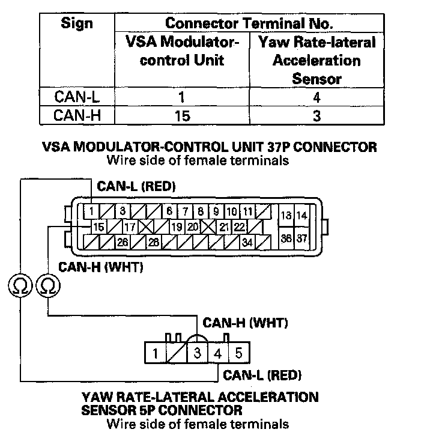
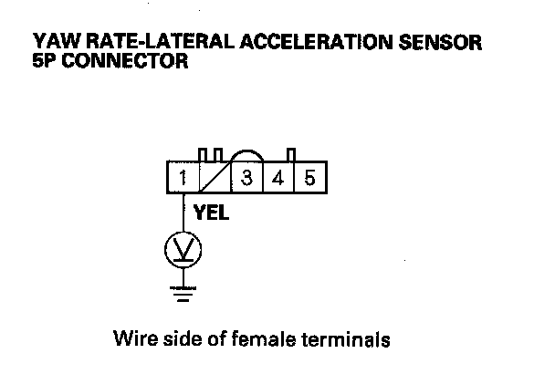
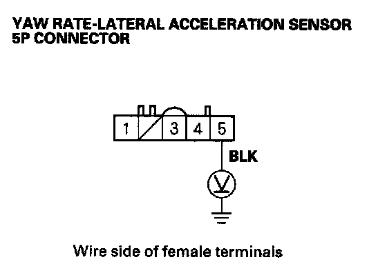

DTC 86-71
DTC 86-71: F-CAN Communication with Yaw Rate-Lateral Acceleration Sensor Malfunction1. Turn the ignition switch ON (II).
2. Clear the DTC with the HDS.
3. Check for DTCs with the HDS.
Is 86-71 DTC indicated?
YES - If the DTC 86-01 is indicated at the same time, do the DTC 86-01 troubleshooting. If 86-01 is not indicated, go to step 4.
NO - If any DTCs are indicated, go to the indicated DTCs troubleshooting. If DTCs are not indicated, intermittent failure, the system is OK at this time. Check for loose terminals at the yaw rate-lateral acceleration sensor 5P connector and the VSA modulator-control unit 37P connector. Refer to intermittent failures troubleshooting.
4. Turn the ignition switch OFF.
5. Disconnect the yaw rate-lateral acceleration sensor 5P connector.
6. Disconnect the VSA modulator-control unit 37P connector.
7. Check for continuity between the VSA modulator-control unit 37P connector terminal and the yaw rate-lateral acceleration sensor 5P connector terminal (see table).

Is there continuity?
YES - Go to step 8.
NO - Repair open in the wire between the yaw rate-lateral acceleration sensor and the VSA modulator-control unit.
8. Turn the ignition switch ON (II).
9. Measure voltage between yaw rate-lateral acceleration sensor 5P connector terminal No. 1 and body ground.

Is there battery voltage?
YES - Go to step 10.
NO - Check the No. 4 (7.5 A) fuse in the under-dash fuse/relay box. If the fuse is OK, repair open in the wire between the No. 4 (7.5 A) fuse and yaw rate-lateral acceleration sensor.
10. Turn the ignition switch OFF.
11. Reconnect the yaw rate-lateral acceleration sensor 5P connector.
12. Turn the ignition switch ON (II).
13. Measure voltage between yaw rate-lateral acceleration sensor 5P connector terminal No. 5 and body ground.

Is there 0.1 V or less?
YES - Replace the yaw rate-lateral acceleration sensor.
NO - Repair open in the wire between the yaw rate-lateral acceleration sensor and body ground (G602).